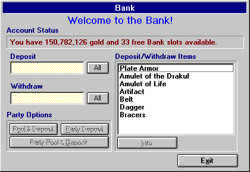

The City: Bank

To Deposit or Withdraw money from your account, either type in the amount and press Enter or press the "All" button.
You can also deposit up to 40 items in the Bank by Dragging and Dropping the selected item from your character's Items Window into the Items list located on the right hand side of the Bank Window. To withdraw an item, simply select the item in the Bank Window's Items list and drag it to your character's items window and drop it in the preferred slot. You can obtain information on any item in the Bank by selecting the item and then clicking the Info button.
Party Options
If you currently have a party put together, you will also be presented with a small set of Party Options, which Includes Pool & Deposit, Party Deposit and Party Pool & Deposit. Pool & Deposit means that all characters in the party give the gold they are currently carrying to the current character in the bank, and then the current character deposits the pooled money. Party Deposit means that each character in the party Deposits all of their money into their own bank account. Party Pool & Deposit means that all characters in the party give all of their money (includes that in the bank) to the current character to deposit.
Move to the next section to read about The City Morgue.
Move to the previous section to read about The City.
M1: "The Depths of Dejenol" is a Trademark of Decklin's Domain Ltd and is © Copyright 1994-2026 All Rights Reserved